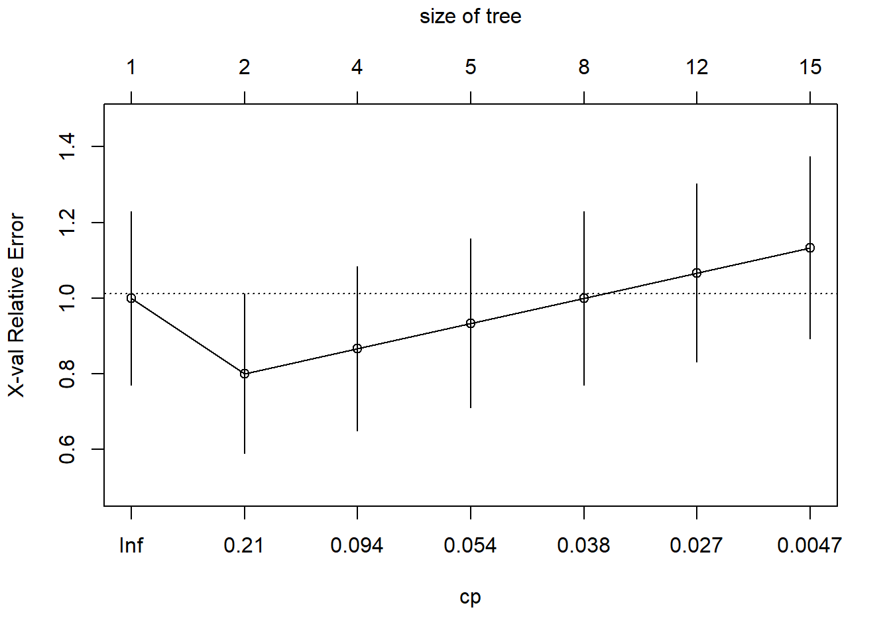
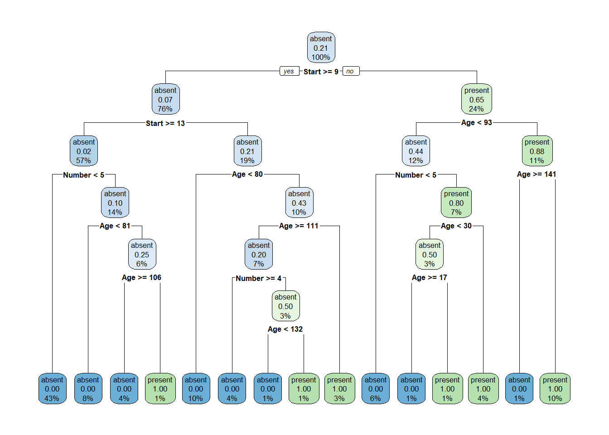
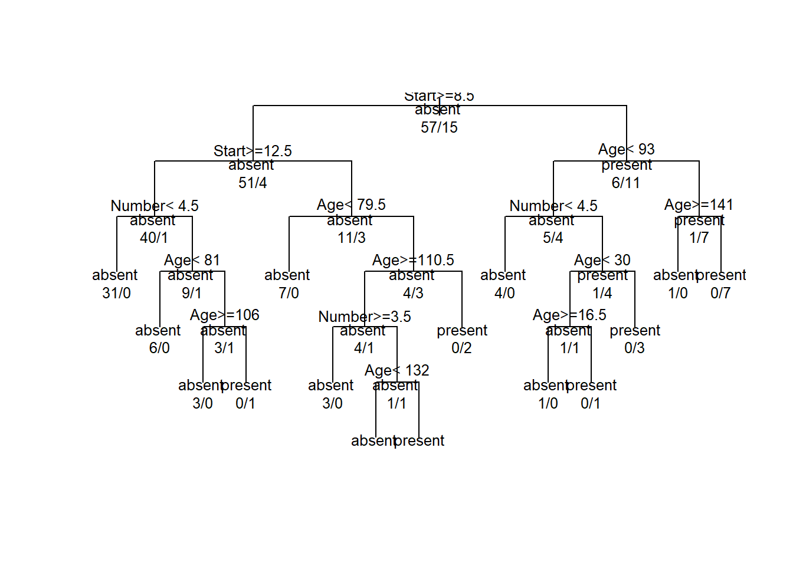
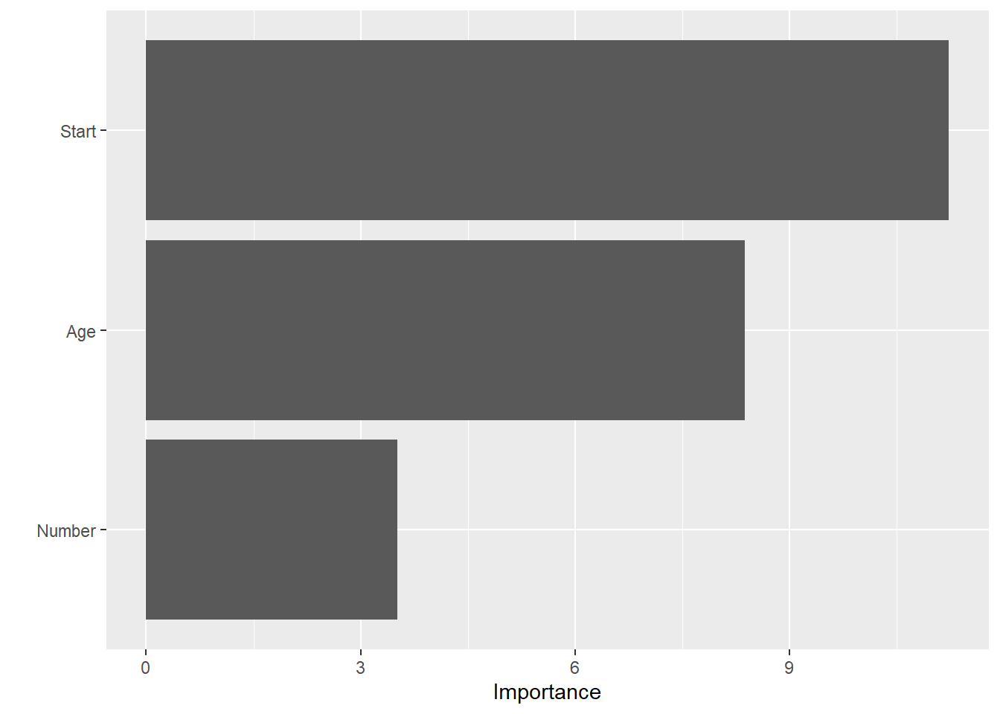

Ensuring that the proportion of the binary response (Kyphosis = present) is the same in both training and testing datasets helps in reducing bias. Stratification ensures that the evaluation of the model (on the test set) is fair and accurate. If the test set has a very different proportion of the binary response compared to the training set, the model’s performance metrics might not reflect its true predictive power.
1 (b)
Fitting Full Model
model_full <-glm(Kyphosis ~ ., data = trainData, family =binomial(link="logit"))summary(model_full)
Call:
glm(formula = Kyphosis ~ ., family = binomial(link = "logit"),
data = trainData)
Coefficients:
Estimate Std. Error z value Pr(>|z|)
(Intercept) -1.047104 1.584372 -0.661 0.50868
Age 0.009606 0.007057 1.361 0.17343
Number 0.317924 0.237262 1.340 0.18026
Start -0.260587 0.079381 -3.283 0.00103 **
---
Signif. codes: 0 '***' 0.001 '**' 0.01 '*' 0.05 '.' 0.1 ' ' 1
(Dispersion parameter for binomial family taken to be 1)
Null deviance: 73.691 on 71 degrees of freedom
Residual deviance: 50.402 on 68 degrees of freedom
AIC: 58.402
Number of Fisher Scoring iterations: 5
For Age, a one-unit increase in age increases the log odds of having kyphosis by 0.009606. The Start variable is significantly associated with kyphosis (negative coefficient indicates inverse relationship), while Age and Number are not statistically significant in this model.
Fitting Null Model
model_null <-glm(Kyphosis ~1, data = trainData, family =binomial(link="logit"))summary(model_null)
Call:
glm(formula = Kyphosis ~ 1, family = binomial(link = "logit"),
data = trainData)
Coefficients:
Estimate Std. Error z value Pr(>|z|)
(Intercept) -1.3350 0.2902 -4.6 4.22e-06 ***
---
Signif. codes: 0 '***' 0.001 '**' 0.01 '*' 0.05 '.' 0.1 ' ' 1
(Dispersion parameter for binomial family taken to be 1)
Null deviance: 73.691 on 71 degrees of freedom
Residual deviance: 73.691 on 71 degrees of freedom
AIC: 75.691
Number of Fisher Scoring iterations: 4
The estimated log odds of having Kyphosis when all predictors are at their reference levels (or in this case, when no predictors are included) is -1.3350. This suggests a lower likelihood of Kyphosis occurrence under the baseline condition of the model. The p-value is 4.22e-06 (very small), which is highly significant . The significant intercept suggests that the baseline probability is not equal to chance level.
Comparision:
The AIC’s preference for the full model suggests that the predictors included in the model contribute meaningfully to explaining the variability in the response variable, Kyphosis. This means that these predictors help in better predicting the presence or absence of Kyphosis following surgery.
Full Model: Lower residual deviance (50.402) compared to the null deviance (73.691), indicating that the model explains a significant portion of the variance in the response variable. AIC is 58.402, which provides a basis for model comparison.
Null Model: Null and residual deviances are equal (73.691), indicating the model does not explain any variance beyond the intercept. Higher AIC (75.691) compared to the first model, suggesting a poorer fit.
1 (c)
ROC - Train Data
library(pROC)
Type 'citation("pROC")' for a citation.
Attaching package: 'pROC'
The following objects are masked from 'package:stats':
cov, smooth, var
Call:
roc.default(response = testData$Kyphosis, predictor = pred_null, levels = c("absent", "present"))
Data: pred_null in 7 controls (testData$Kyphosis absent) < 2 cases (testData$Kyphosis present).
Area under the curve: 0.5
Training Data:
Full Model:
AUC: 0.8819. This is a high AUC value, indicating that the full model has a good ability to distinguish between cases where Kyphosis is present and absent in the training data.
Null Model:
AUC: 0.5. This is the lowest possible AUC value for a binary classifier, suggesting that the null model (with no predictive variables) performs no better than random guessing at distinguishing between the two classes in the training data.
Test Data:
Full Model:
AUC: 0.5714. This is only slightly better than random chance, which suggests that while the full model performed well on the training data, it does not generalize well to the test data. This could be a sign of overfitting on the training data or could be due to the small sample size of the test data (only 9 cases).
Null Model:
AUC: 0.5, consistent with the training data result, again indicating performance no better than random chance.
The small sample size, especially in the test set, is a significant limitation. With only 9 cases in the test set, the AUC result might not be a reliable indicator of the model’s performance.
In summary, while the full model shows promise in the training set, its performance on the test set raises questions about its generalizability
1 (d)
exp(coef(model_full)["Age"])
Age
1.009652
Holding all other variables constant, the probabilities of getting kyphosis after surgery rise by approximately 1.00964 for every year of age increase. However, since the 95% confidence interval likely includes 1 (due to the p-value being greater than 0.05), this increase is not statistically significant. Even though the coefficient is not statistically significant, it does provide an estimate of the direction and magnitude of the relationship between Age and the presence of kyphosis post-surgery. Practically, the small odds ratio close to 1 indicates that Age, by itself, might not be a strong predictor of kyphosis in the model.
# Define the coefficients from the modelbeta_0 <--1.047104beta_age <-0.009606# Function to convert logit to probabilitylogit_to_prob <-function(logit) { odds <-exp(logit) prob <- odds / (1+ odds)return(prob)}# Choose an example ageage_example <-10# Calculate the logit for the example age and age+1logit_age_example <- beta_0 + (beta_age * age_example)logit_age_plus_one <- beta_0 + (beta_age * (age_example +1))# Convert logit to probabilityprob_age_example <-logit_to_prob(logit_age_example)prob_age_plus_one <-logit_to_prob(logit_age_plus_one)# Calculate the change in probabilitydelta_prob <- prob_age_plus_one - prob_age_example# Display the probabilities and the changeprob_age_example
[1] 0.2786749
prob_age_plus_one
[1] 0.28061
delta_prob
[1] 0.001935051
Probability of Presence of Kyphosis at Age 10: The model estimates that the probability of the presence of Kyphosis at age 10 is approximately 0.2786749 or 27.87%.
Probability of Presence of Kyphosis at Age 11: For a child one year older (age 11), the probability of the presence of Kyphosis is estimated to be slightly higher, at approximately 0.28061 or 28.06%.
1 (e)
\(H_0\) : \(\beta_{Age}\) = 0
Age has no effect on the log probabilities of having kyphosis, according to the null hypothesis, which implies that Age has a zero regression coefficient.
\(H_1\) : \(\beta_{Age}\)\(\not=\) 0
According to the alternative hypothesis, age does affect the log odds of having kyphosis, as indicated by the fact that the regression coefficient for age differs from zero.
Z-Value:
# Given values from your model summarybeta_age_hat <-0.009606SE_beta_age <-0.007057# Calculate the z-valuez_value <- beta_age_hat / SE_beta_age# Calculate the two-tailed p-value# Multiply by 2 for the two-tailed test since we are testing the coefficient being different from zerop_value <-2* (1-pnorm(abs(z_value)))# Output the z-value and p-valuez_value
[1] 1.361202
p_value
[1] 0.17345
The crucial region of a standard normal distribution, which would normally extend beyond around ±1.96 for a two-tailed test at the 5% significance level, is not reached by the z-value of roughly 1.36.
The p-value above the standard alpha threshold of 0.05, signifying a 95% confidence interval. As a result, there is insufficient data to rule out the null hypothesis.
To put it simply, the statistical test indicates that there is insufficient data to draw the conclusion that age significantly affects the likelihood of kyphosis following surgery.
Wald Test:
# Define the coefficient and its standard error for Agebeta_age_hat <-0.009606SE_beta_age <-0.007057# Calculate the Wald statisticwald_stat <- (beta_age_hat / SE_beta_age)^2# Calculate the p-value using the chi-square distributionp_value <-1-pchisq(wald_stat, df =1)# Output the Wald statistic and p-valuewald_stat
[1] 1.85287
p_value
[1] 0.17345
We do not reject the null hypothesis since the p-value is 0.17345, which is higher than the typical significance level of 0.05. This indicates that there is insufficient data to draw the conclusion that age has a statistically significant impact on the presence of kyphosis.
The regression model indicates an estimated effect, but at the usual 5% significance threshold, the association is not strong enough to be considered statistically trustworthy.
1 (f)
model_reduced <-glm(Kyphosis ~ Age, data=trainData, family =binomial(link ="logit"))summary(model_reduced)
Call:
glm(formula = Kyphosis ~ Age, family = binomial(link = "logit"),
data = trainData)
Coefficients:
Estimate Std. Error z value Pr(>|z|)
(Intercept) -1.744365 0.555998 -3.137 0.0017 **
Age 0.004610 0.005076 0.908 0.3637
---
Signif. codes: 0 '***' 0.001 '**' 0.01 '*' 0.05 '.' 0.1 ' ' 1
(Dispersion parameter for binomial family taken to be 1)
Null deviance: 73.691 on 71 degrees of freedom
Residual deviance: 72.854 on 70 degrees of freedom
AIC: 76.854
Number of Fisher Scoring iterations: 4
Evaluating Accuracy for both full and reduced model:
pred.red <-predict(model_reduced, newdata = testData, type="response")pred.full <-predict(model_full, newdata = testData, type="response")# Convert predictions to binary outcomes based on a 0.5 cutoffclass.full <-ifelse(pred.full >0.5, "present", "absent")class.red <-ifelse(pred.red >0.5, "present", "absent")#evaluating accuracy - performance metricaccuracy.full <-mean(class.full == testData$Kyphosis)accuracy.red <-mean(class.red == testData$Kyphosis)accuracy.full
[1] 0.5555556
accuracy.red
[1] 0.7777778
This means that the full model correctly predicts whether Kyphosis occurs or not about 55.56% of the time on the test data. The reduced model has an accuracy of about 77.78%, indicating that it correctly predicts the occurrence of Kyphosis approximately 78% of the time.
Roc and auc of full model:
roc.full <-roc(testData$Kyphosis, pred.full)
Setting levels: control = absent, case = present
Setting direction: controls < cases
auc.full <-auc(roc.full)auc.full
Area under the curve: 0.5714
Roc and auc of reduced model:
roc.red <-roc(testData$Kyphosis, pred.red)
Setting levels: control = absent, case = present
Setting direction: controls < cases
auc.red <-auc(roc.red)auc.red
Area under the curve: 0.7143
Model 1, with an AUC of 0.7143, is likely to be more effective in this specific analysis context, assuming that the higher AUC is the primary criterion for comparison.
1 (g)
table(kyphosis$Kyphosis)
absent present
64 17
library(rpart)tree_kyph <-rpart(Kyphosis ~., data = trainData,control =rpart.control(minsplit =1, cp =0.001))printcp(tree_kyph)
From nsplit = 4 onwards, the xerror starts to increase with additional splits. The tree with nsplit = 3 (CP = 0.06666667) might be a good choice as it has the lowest xerror (0.8000000) among all models
The CP value of 0.1333333 suggests that a tree of moderate complexity was chosen. The xerror of 0.8, however, seems quite high. This suggests that even after pruning the tree to the optimal complexity, the model’s predictive accuracy is not very high. An xerror of 0.8 implies that the model is incorrect 80% of the time in cross-validation
plotcp(tree_kyph)

The plot shows that initially, as the tree complexity increases (moving from left to right with decreasing cp), the error tends to decrease, reaching a minimum around cp = 0.044. This suggests that up to this point, allowing the tree to grow reduces error and improves model performance. The lowest point on the curve represents the optimal trade-off between tree complexity and error rate. In this case, it appears to be around cp = 0.044, where the tree has achieved the lowest cross-validation relative error. Based on this plot, a cp value of approximately 0.044 would likely be chosen for the final model to prevent overfitting while maintaining a low error rate.
library(rpart.plot)
Warning: package 'rpart.plot' was built under R version 4.3.2
rpart.plot(tree_kyph, extra ="auto")

plot(tree_kyph, uniform =TRUE, main =" ")text(tree_kyph, use.n =TRUE, all =TRUE, cex = .8)

Evaluation of Metrics:
test_df <-data.frame(actual = testData$Kyphosis, pred =NA)test_df$pred <-predict(tree_kyph, newdata = testData, type ="class")(conf_matrix_base <-table(test_df$actual, test_df$pred)) #confusion matrix
absent present
absent 5 2
present 2 0
True Absent (True Negative, TN): 5 cases were correctly predicted as not having the condition.
False Present (False Positive, FP): 2 cases were incorrectly predicted as having the condition when they did not.
False Absent (False Negative, FN): 2 cases were incorrectly predicted as not having the condition when they actually did.
True Present (True Positive, TP): 0 cases were correctly predicted as having the condition.
The output value of approximately 0.714 means the model correctly identifies about 71.4% of the actual positive cases. The output value of 0 indicates that the model did not correctly identify any of the actual negative cases. The value of approximately 0.444 means that about 44.4% of the predictions were incorrect.
1 (h)
library(ranger)
Warning: package 'ranger' was built under R version 4.3.2
Ranger result
Call:
ranger(Kyphosis ~ ., data = trainData, importance = "impurity", mtry = 3)
Type: Classification
Number of trees: 500
Sample size: 72
Number of independent variables: 3
Mtry: 3
Target node size: 1
Variable importance mode: impurity
Splitrule: gini
OOB prediction error: 15.28 %
The model was trained on 72 data points. here are 3 independent variables used in the model. The model used 3 variables at each split. The minimum node size is 1, indicating that the algorithm continued splitting until each node contained only one data point or could not be split further. The Out-Of-Bag (OOB) prediction error is 16.67%. Model Complexity: Given that mtry is equal to the total number of variables, each tree in the forest considered all variables at each split.
library(vip)
Warning: package 'vip' was built under R version 4.3.2
Attaching package: 'vip'
The following object is masked from 'package:utils':
vi
(v1 <-vi(fit.rf.ranger))
# A tibble: 3 × 2
Variable Importance
<chr> <dbl>
1 Start 11.2
2 Age 8.38
3 Number 3.51
vip(v1)

The Start variable has the highest importance score of approximately 11.75. This indicates that among the features used in your model.
The Age variable follows with an importance score of about 8.13. This suggests that Age is also a crucial factor in the model’s predictions but slightly less so than Start.
The Number variable has the lowest importance score of approximately 3.73 among the three listed. While it does play a role in the predictions, its influence is less than that of Start and Age.
The importance scores indicate that Start and Age are more significant predictors for Kyphosis in the model, compared to Number.
From the plot, we can interpret the following:
Start: This variable has the highest importance score, with its bar extending the furthest along the x-axis. It is the most influential feature in predicting the outcome variable in your model.
Age: The second most important variable, with a noticeably shorter bar than Start, but still a significant contributor to the model.
Number: The least important of the three, with the shortest bar, indicating that it has the least influence on the model’s predictions.
The length of the bars corresponds to the numerical values: Start with approximately 11.75, Age with about 8.13, and Number with roughly 3.73.
pred <-predict(fit.rf.ranger, data = testData)test_df <-data.frame(actual = testData$Kyphosis, pred =NA)test_df$pred <- pred$predictions(conf_matrix_rf <-table(test_df$actual, test_df$pred)) #confusion matrix
True Negatives (TN): The model correctly predicted ‘Absent’ 6 times.
False Positives (FP): The model incorrectly predicted ‘Present’ when it was actually ‘Absent’ 1 time.
False Negatives (FN): The model incorrectly predicted ‘Absent’ when it was actually ‘Present’ 2 times.
True Positives (TP): The model correctly predicted ‘Present’ 0 times.
Sensitivity is 0 out of 2 (since there are no True Positives and 2 False Negatives), which results in 0. Specificity is 6 out of 7 (6 True Negatives and 1 False Positive), which should actually be 6/7 or approximately 0.857. About 33.33% of the predictions were incorrect.
library(randomForestSRC)
Warning: package 'randomForestSRC' was built under R version 4.3.2
randomForestSRC 3.2.2
Type rfsrc.news() to see new features, changes, and bug fixes.
system.time({ rf_ranger <-ranger(Kyphosis ~ ., data = trainData, probability =TRUE)})
user system elapsed
0 0 0
system.time({ rf_randomForestSRC <-rfsrc(Kyphosis ~ ., data = trainData)})
user system elapsed
0.02 0.00 0.01
predict(rf_randomForestSRC,newdata = testData)
Sample size of test (predict) data: 9
Number of grow trees: 500
Average no. of grow terminal nodes: 10.836
Total no. of grow variables: 3
Resampling used to grow trees: swor
Resample size used to grow trees: 46
Analysis: RF-C
Family: class
Imbalanced ratio: 3.5
Brier score: 0.25382483
Normalized Brier score: 1.01529931
AUC: 0.42857143
PR-AUC: 0.19394071
G-mean: 0
Requested performance error: 0.33333333, 0.14285714, 1
Confusion matrix:
predicted
observed absent present class.error
absent 6 1 0.1429
present 2 0 1.0000
Misclassification error: 0.3333333
The AUC of 0.4286 is lower than the desired threshold of 0.5 Sample size of test (predict) data: 9, is a significant limitation, possibly contributing to the poor performance metrics
Number of grow trees: 500, which is the number of trees in the Random Forest.
Average no. of grow terminal nodes: 10.836, referring to the average number of terminal nodes per tree.The class imbalance (imbalanced ratio of 3.5) might also be affecting the model’s performance
1 (i)
library(xgboost)
Warning: package 'xgboost' was built under R version 4.3.2
library(Matrix)trainData$Kyphosis <-ifelse(trainData$Kyphosis=='present',1,0)testData$Kyphosis <-ifelse(testData$Kyphosis=='present',1,0)# Transform the predictor matrix using dummy (or indictor or one-hot) encoding matrix_predictors.train <-as.matrix(sparse.model.matrix(Kyphosis ~., data = trainData))[, -1]matrix_predictors.test <-as.matrix(sparse.model.matrix(Kyphosis ~., data = testData))[, -1]# Train datasetpred.train.gbm <-data.matrix(matrix_predictors.train) # predictors only#convert factor to numerickyphosis.train.gbm <-as.numeric(as.character(trainData$Kyphosis)) dtrain <-xgb.DMatrix(data = pred.train.gbm, label = kyphosis.train.gbm)# Test datasetpred.test.gbm <-data.matrix(matrix_predictors.test) # predictors only#convert factor to numerickyphosis.test.gbm <-as.numeric(as.character(testData$Kyphosis))dtest <-xgb.DMatrix(data = pred.test.gbm, label = kyphosis.test.gbm)watchlist <-list(train = dtrain, test = dtest)param <-list(max_depth =2, eta =1, nthread =2,objective ="binary:logistic", eval_metric ="auc")xgb <-xgb.train(param, dtrain, nrounds =2, watchlist)
First Stage ([1]): train-auc: 0.832164: This is a high AUC value for the training set, indicating that at this stage, the model has a good ability to distinguish between the two classes (likely positive and negative outcomes) test-auc: 0.357143: In contrast, the AUC for the test set is much lower, significantly below the threshold of 0.5, which represents random chance.
Second Stage ([2]): train-auc: 0.934503: There’s an improvement in the training AUC, showing that the model is getting better at classifying the training data. test-auc: 0.357143: Despite the improved performance on the training data, the test AUC remains unchanged and low.